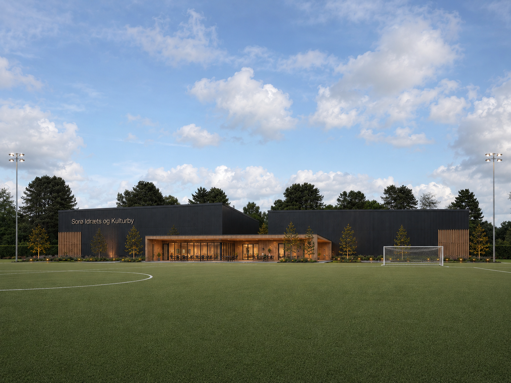

Idræts- og kulturbyen er tegnet ud fra ét spørgsmål: Hvad har borgerne i Sorø brug for?
Faste aktiviteter i dagtimerne: motion, padel, fitness, kortspil og kaffe i caféen. Et fællesskab, der holder både krop og humør i gang, og et effektivt værn mod ensomhed.
Multisport i hverdagen, dans, klatring og et trygt sted at være efter skole. Ungemiljøet bygges op omkring bevægelse og fællesskab, ikke skærme og gadehjørner.
Padel, foreningsfitness og fleksible baner morgen og aften. Faciliteter, der passer til et travlt familieliv, til foreningspris.
Kulturhus, mødelokaler og haller til byens foreninger. Vi byder alle velkommen, også de aktører der i dag holder til på Skolevej: OK Sorø, balletforeningen, LOF, lokalhistorisk forening, lokalrådet og flere.
Sådan kan en helt almindelig tirsdag se ud, når husene står færdige.
Seniorpadel og formiddagsfitness. Gåklubben slutter med kaffe i caféen. Balletforeningen øver i multihallen, og hjemmepassergruppen mødes i kulturhuset.
Skolen ringer ud, og hallerne fyldes: multisport for de 10 til 15-årige, dans for pigerne, klatring og lektiecafé i klubhuset.
Padelbanerne er fyldt med familier og motionister. Foreningsfitness kører, håndboldträning i multihallen, og mødelokalet er booket af lokalrådet.
Idræts- og kulturbyen gør det muligt at oprette de tilbud, borgerne har efterspurgt:

Vi samler behov fra alle interesserede foreninger, så husene bygges til det virkelige liv. Kontakt os og bliv en del af projektet.
Kontakt os